Case 01 / Automotive co-creation
Chery Fulwin X3L · 2025
Chery Fulwin X3L · 2025
原子时代
把一辆方盒子 SUV 的复古潜质，变成可感知的产品语言。从早期设计推演、正式视觉，到车展验证与官方发布。
- Project
- 奇瑞风云 X3L 复古版
- Theme
- ATOM TIMES / 原子时代
- Scope
- 外观装饰 · CMF · 视觉传播
- Evidence
- 设计图 · 车展 · 发布会
01 / Concept development从草图到
从草图到
设计方向。
以 60–70 年代的原子时代为视觉原点，在保留原车辨识度与功能边界的前提下，推演车身色块、前脸、车顶与细节。这里展示的是早期数字方案图，而非手绘草图。
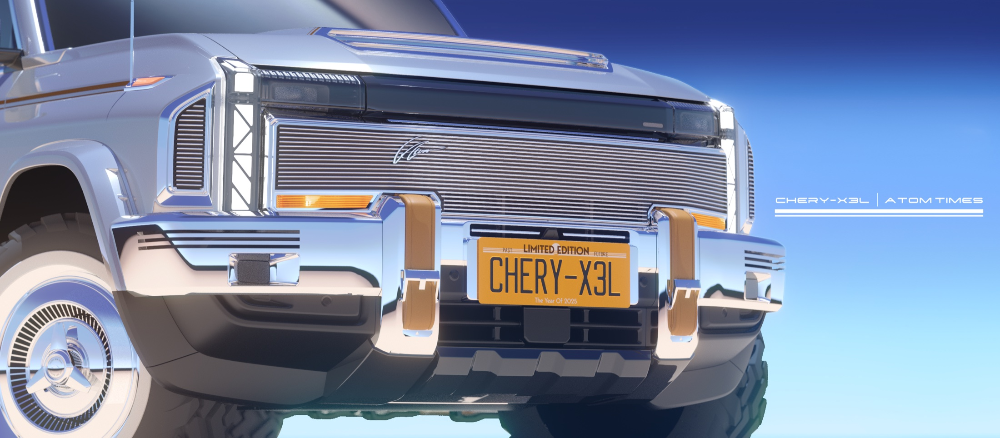
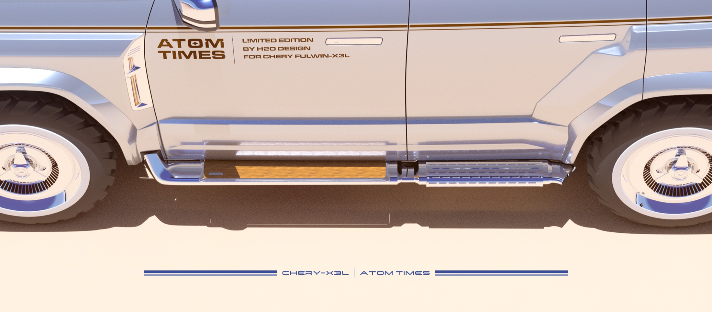
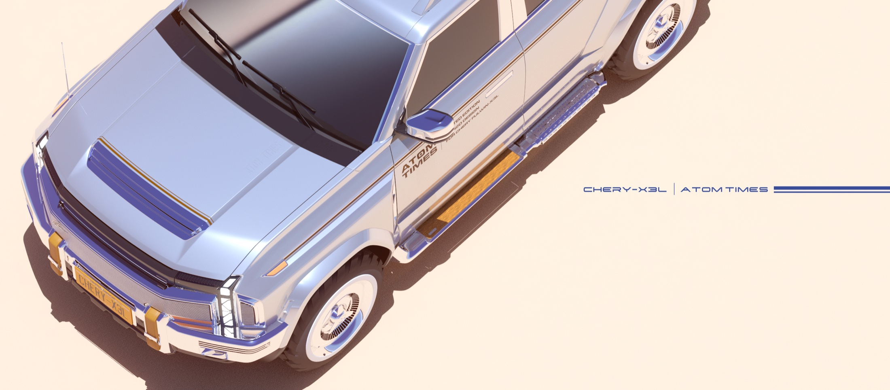
02 / Final design正式视觉，
正式视觉，
完整成形。
银蓝配色将复古符号与现代车型结合：车身拉花、轮眉、灯具、前后护杠与侧踏形成一套连续的视觉系统。黑色版本与主题海报则延展了传播表达。
银蓝版本
Blue / Silver · 20 images滚轮横移 / 触屏滑动浏览 · 点击放大
黑色版本
Black · 7 images滚轮横移 / 触屏滑动浏览 · 点击放大
03 / Chengdu Motor Show从图纸，
从图纸，
到车展现场。
成都车展让方案进入真实观看、拍摄与讨论场景。现场照片与项目总结记录了观众停留、媒体传播和用户反馈，也为后续产品判断提供依据。
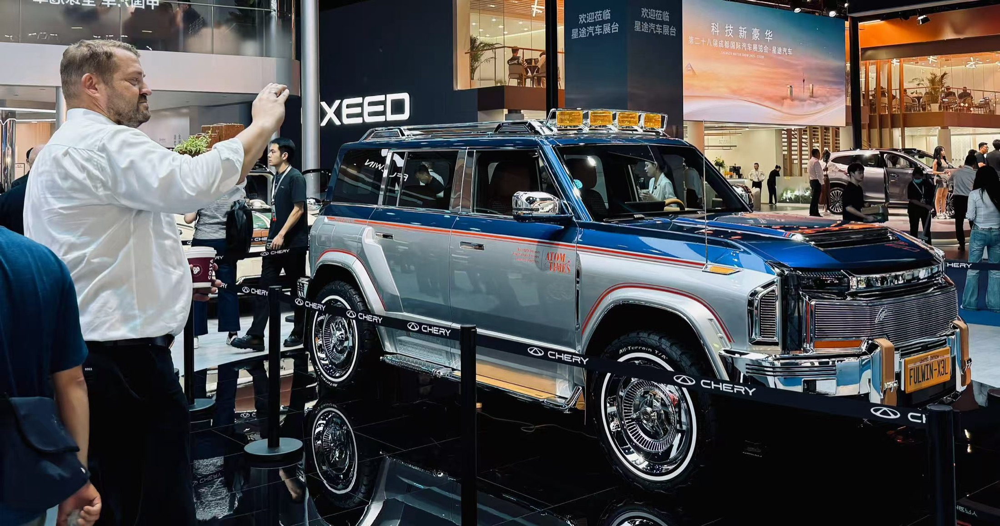
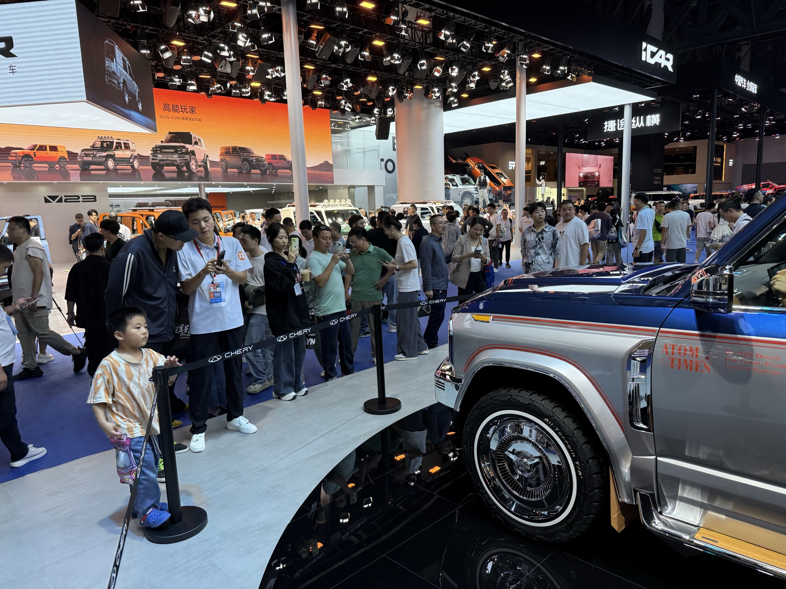
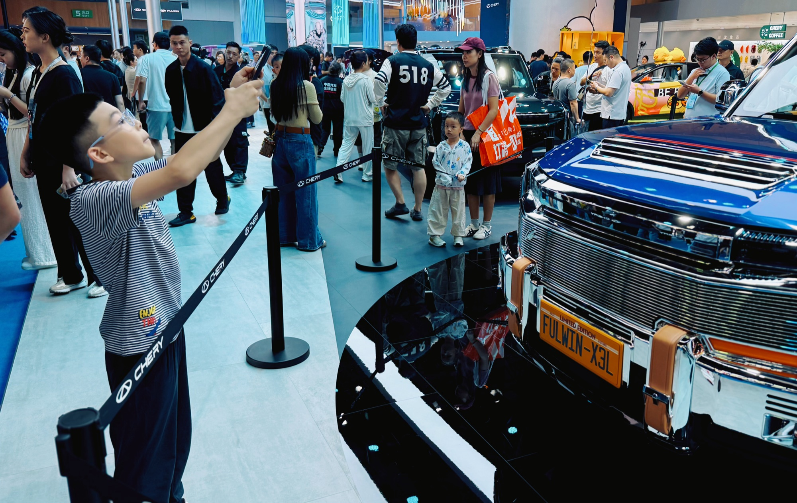
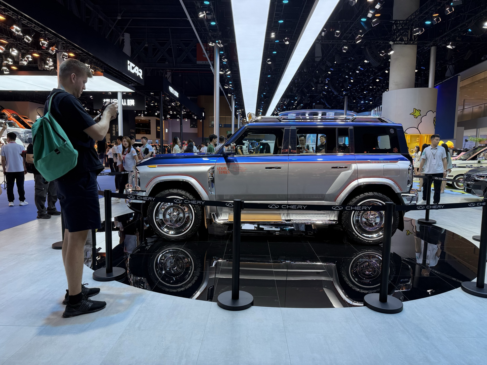
现场调研与传播
Project report / Slides 17–21Traffic / 项目总结估算3.5 万+成都车展期间展台总人流量；以拍照打卡、询问为统计口径。
Research / 8.29–9.2约 200 人项目总结记录的现场调研样本规模。
Signals / 现场反馈价格 / 上市消费者及销售人员反复提及的关注点。
以下图表与媒体截图直接摘自《奇瑞 X3L 项目总结》；所列数字属于该材料的现场估算与调研记录，并非独立第三方审计结果。
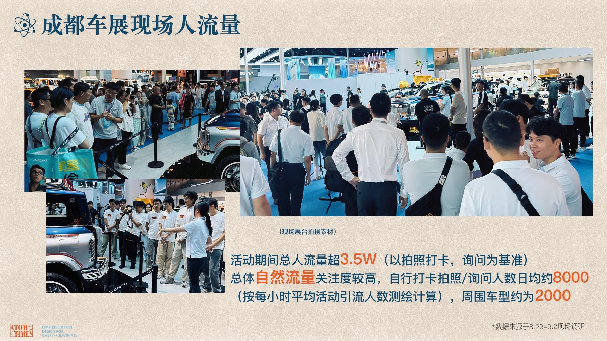
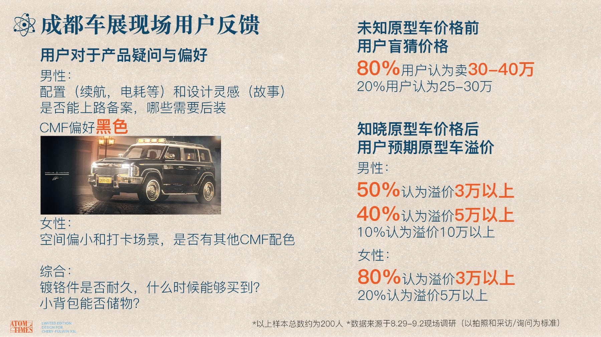
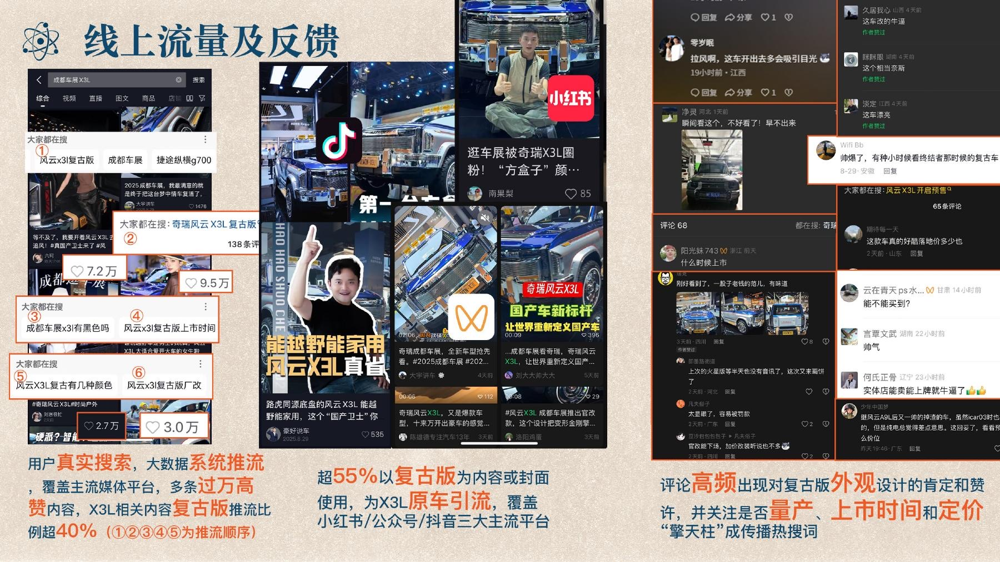
04 / Official launch走上官方
走上官方
发布现场。
从车展展示延伸至官方直播发布，复古定制版作为风云 X3L 个性化版本之一登上发布会大屏。下方保留完整舞台画面和项目总结中的 9 月 17 日发布现场记录。
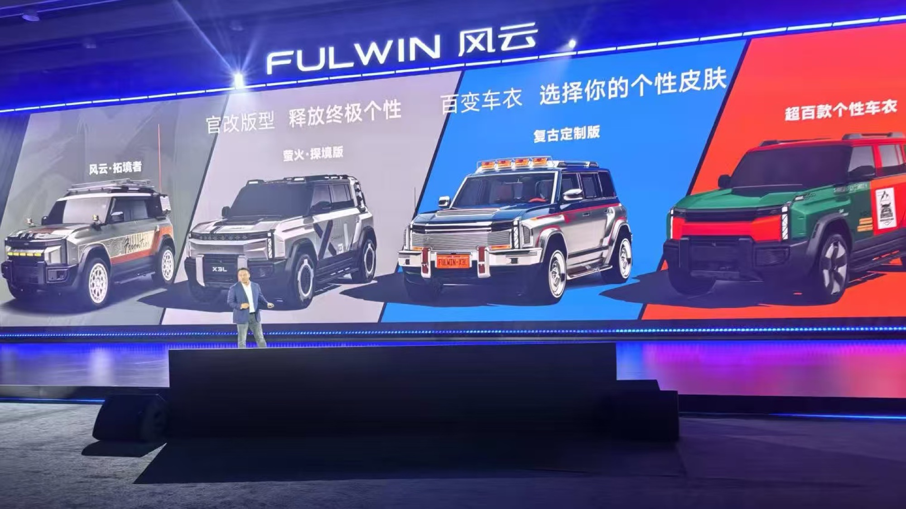
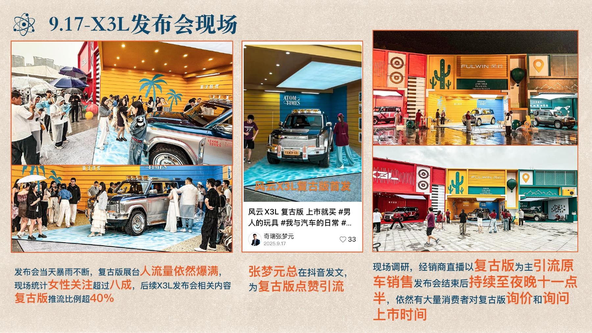